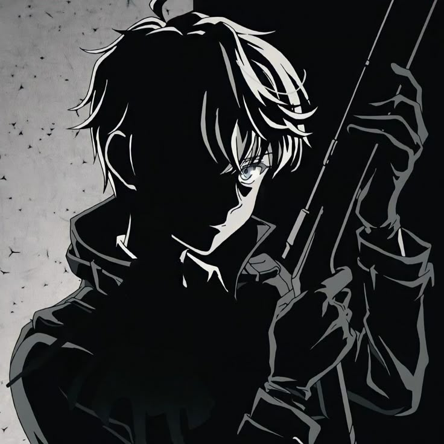
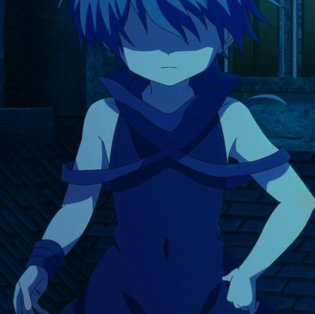

Pengantar
Welcome, This is my project of html 👋👋
Saya disini sebagai santri HSI Boarding School
Dan di project ini, saya membuat web yg berisi : "Biodata", "Galeri",
"Jadwal", "Feedback"
Minat Saya
 
Karakter di atas berasal dari anime yg "MC"-nya para bocil kematian,
walaupun kecil tapi mematikan